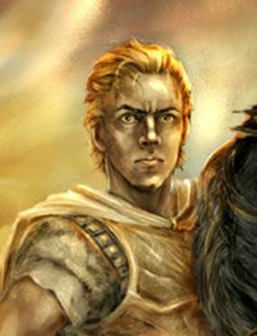

Forums galactiques > Assemblée Galactique : diplomatie officielle > Rois et Esclaves (RP)
Pages : 1
| Arcturus Vyl Respect diplomatique : 3  31/08 ETU 22:26 | Score : 3 Détails Arcturus Vyl se tenait devant la grande baie vitrée de ses appartements. Il regardait la nuit noir edehors, et les étoiles, qui étaient presque entièrement occultées par les lumières de la capitale galactique qui s'étendait devant lui. Le vague reflet montrait un homme d'une quarantaine d'années, aux joues creuses et au nez droit. Sa barbe brune était tressée, comme ses cheveux, qui lui arrivaient au milieu du dos. Mais le plus saisissant était ses yeux. Des yeux bleus dont le regard semblait pouvoir geler l'eau. Un regard qui, mélé au physique dur de son porteur, l'entourait d'une aura de violence latente semblable à de la folie. Sa main gauche ornée de plusieurs anneaux aux inscriptions étranges tournait lentement l'un des pendentifs accrochés à son cou.
Il repensa à son arrivée à cette tant vantée Assemblée Galactique. Tant de moutons parmisq ces commandants, ces prétendus maitres de grands empires. Les commandants étaient considérés comme de grands meneurs d'homme, mais il lui semblait qu'ils comptaient bon nombre d'imbéciles faibles parmi eux. Arcturus eut un sourire mauvais. Il repensa à l'homme, ou plutôt l'esclave, qui avait osé le défier sur ses propres terres, là-bas, sur Valgard, son domaine. Une méprisable larve qu'il avait remis à sa place à sa façon. Aux dernières nouvelles, il n'était pas sorti du coma et son état était très instable. Les médecins doutaient qu'il puissent jamais marcher à nouveau. Arcturus sourit. Il avait brisé cet homme comme il briserait les autres esclaves. Des esclaves aux allures et à la prétention de rois. Mais des esclaves quand même. |
Pages : 1
Forums galactiques > Assemblée Galactique : diplomatie officielle > Rois et Esclaves (RP)